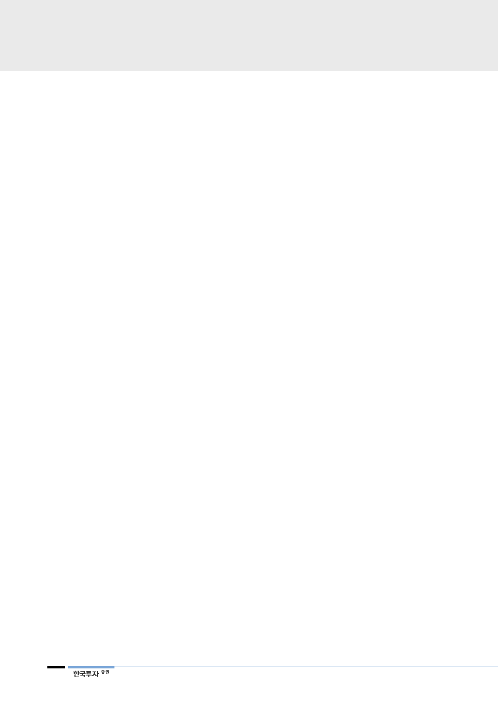

기업개요 및 용어해설
SK하이닉스는 PC, 서버 등 컴퓨팅 제품, 스마트폰, 태블릿 등 모바일 제품의 핵심 부품인 DRAM, NAND 및 MCP 등
메모리 반도체를 생산, 판매하는 종합 반도체 회사. 메모리 세계 2위 업체일 뿐만 아니라 제품 원가경쟁력 선두권으로 시
장지배력을 확고히 하고 있음. SK하이닉스는 현재 이천, 청주의 국내 사업장을 비롯하여 중국 장쑤(江蘇)성 우시(無錫)시
에 생산공장을 운영. 2000년 유동성 위기로 2001년 채권단 공동관리 하의 워크아웃에 들어갔으나, 조기 정상화를 통해
2005년 워크아웃을 졸업하고, 2012년 2월 SK텔레콤에 인수된 이후, 재무 안정성이 높아짐.
18